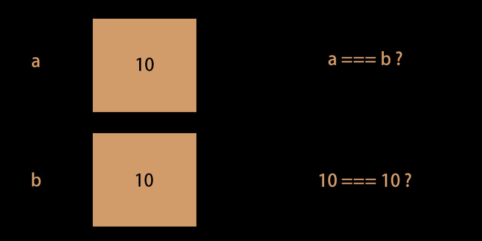
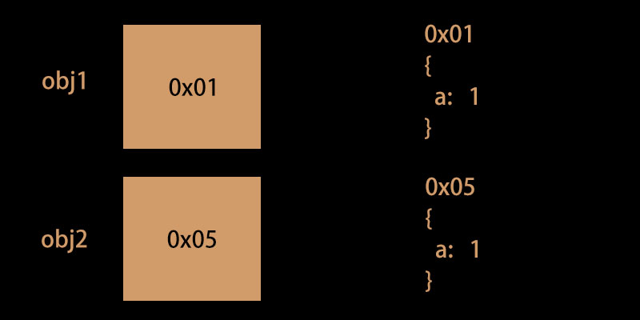
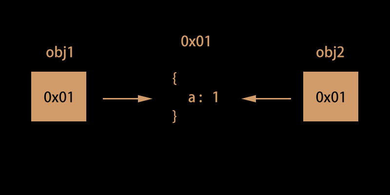
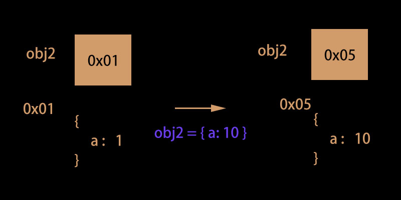

變數真的是你想像中的那個變數嗎？
變數儲存的到底是什麼？
如題，因為是筆記向所以就不花太多時間鋪成。所以就開門見山的說了：
變數可以儲存的值有兩種
一種是「東西本身」，一種是「記憶體位址」。
先測試看看你能不能回答出下面的問題：
1 | console.log([] === []) |
如果你的回答是：false false false false，那恭喜你，你是對的。
來看看為什麼吧，先讓我們看另外一個例子：
1 | var obj1 = {a: 1} |
最後會輸出的結果會是 false。
你可能會很疑惑，想說不是應該會像這樣子嗎：
1 | var a = 5 |
明明都是把東西存到變數裡面，為什麼 存的東西不一樣 會有不同的結果？
你可以參考下面兩張圖。
在你儲存數字的時候，其實是這樣子：

但你儲存物件的時候，卻是這樣子：

0x01 跟 0x05 是記憶體位址的編號，我習慣叫它「指標」（在 C 語言裡是這樣稱呼的）
所以理解這兩個差異後，這樣就說得通了。當你寫 obj1 === obj2 時，其實是等於在問「0x01 === 0x05 嗎？」，這種感覺。
當然，0x01 跟 0x05 顯然是兩個不同的東西。
所以，當變數儲存的東西不是 String、Boolean、Number、undefined、null 時，都是採用物件這種儲存「指標」的方式來存東西。
undefined 跟 null 也是用「放東西」的方式儲存哦，特別做個範例提醒自己：
1 | var a = undefined |
什麼是參考值？
不知道你有沒聽過一種說法：物件儲存的是一個參考值
以前我覺得這個說法很抽象，但其實概念很簡單，讓我們看個例子：
1 | var obj1 = {a: 1} |
如果前面講的東西你有理解的話，應該能猜到這題的結果是 true
一樣來看圖說故事：

在你做 obj2 = obj1 時，可以想成是 obj2 = 0x01 這個意思，obj2 儲存的這個值就是我們一開始提到的那個「參考值」。
所以 obj2.a = 10 的意思其實是「把 0x01 裡面的 a 改成 10」的意思，這也解釋為什麼 obj1.a === obj2.a 會得到 true，因為改的就是同一個東西。
為了讓你把變數的觀念學好，現在再來考你一題：
1 | var obj1 = {a: 1} |
答案是 false。
其實在 obj2 = {a: 10} 這行指令被執行之前，obj1 跟 obj2 的關係就跟剛剛畫的圖片是一樣的。
可是當這行指令被執行後，發生了這件事：

簡單來說，會有這樣的差異是因為「賦值對象」不同的關係：
obj2.a = 10賦值的對象是「0x01 裡面的 a」obj2 = {a: 10}賦值的對象是「obj2」
所以最後才會有這樣不同的結果。
忘了提那個跟 Object 搞曖昧的傢伙（Array）
Array 其實就是物件的一種，不信的話自己 typeof === []。
所以它的變數儲存方式就跟物件一模一樣，來看些例子：
1 | var arr1 = [1] |
它的行為就跟前面的圖一樣，我懶得畫了，忘記了可以自己拉回去上面看。
再來一個例子：
1 | var arr1 = [] |
這題也理解的話就沒什麼問題了。
總結
最後總結一下幾個雷點：
- 賦值給變數值，要搞清楚它存的是「東西本身」，還是「參考值」？
- 對一個變數重新賦值時，要搞清楚你「賦值的對象是誰？」是「變數本身」，還是「參考值裡的東西」